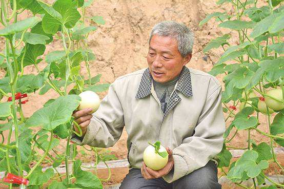
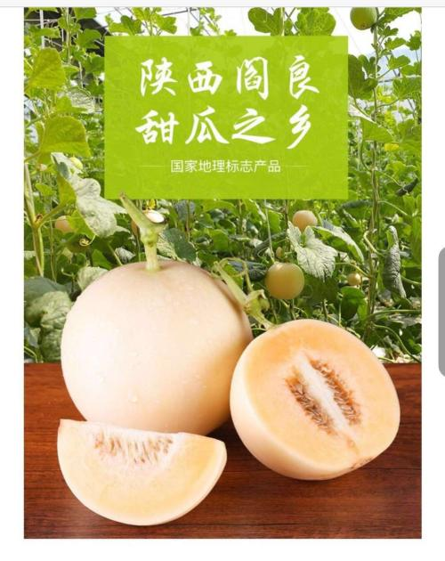
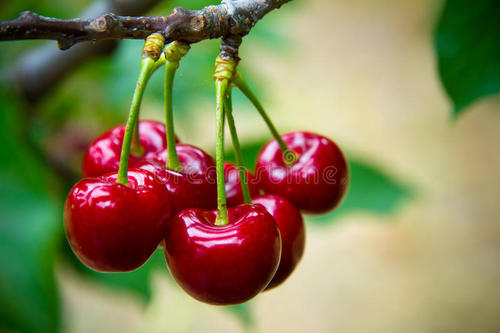
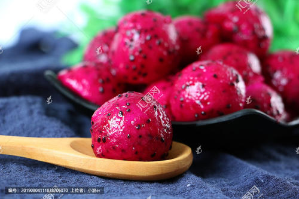
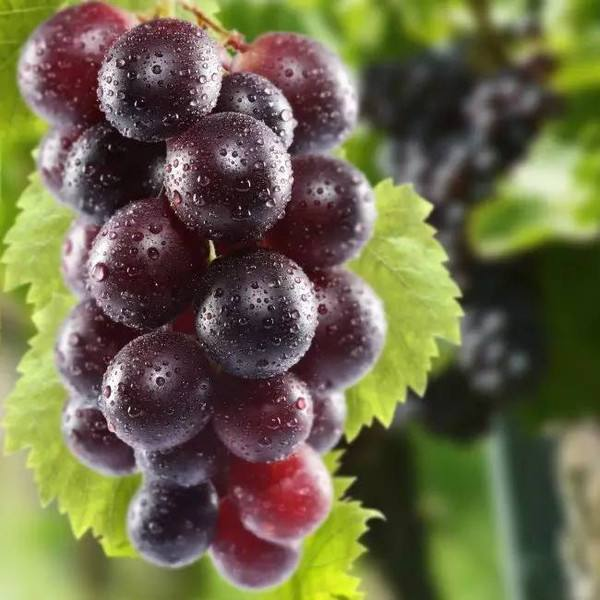
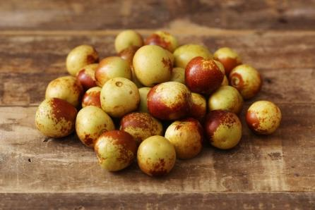
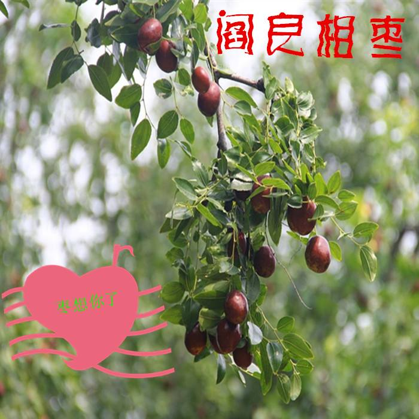
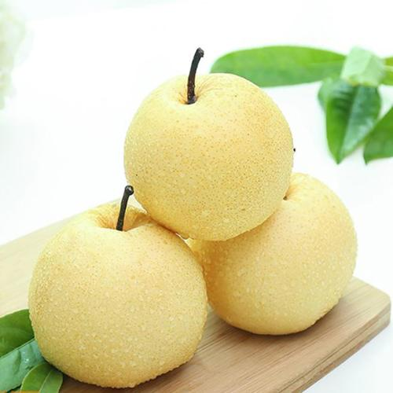
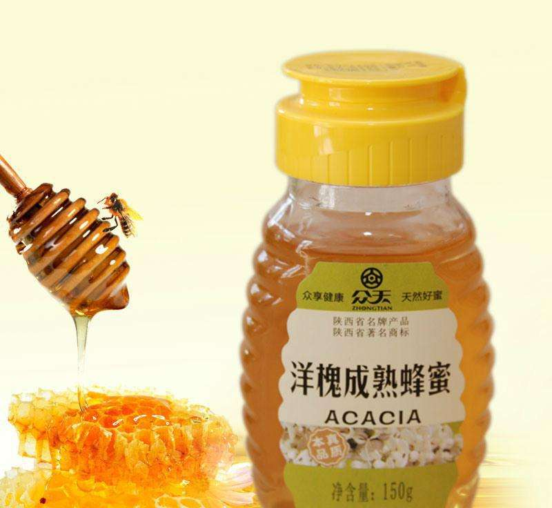
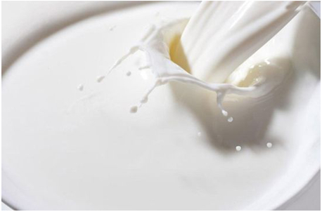

美丽的航空城阎良，地处渭河之滨，
位于西安市东北部，距离市中心50公里，京昆高速、
107省道穿境而过，交通便利，总面积244.4平方公里
总人口28万。阎良是全国最大的早春厚皮甜瓜基地、
国家级无公害蔬菜标准化生产基地、西安市最大的菜篮子供应基地。
有一首打油诗在阎良广为流传：
早春瓜菜销路好，
盛夏葡萄赛玛瑙，
金秋枣梨笑弯腰，
寒冬草莓展风骚。

春季每年4月，阎良特色农产品的主力军甜瓜开始陆续上市，稳定供货期长达2个多月。
阎良的甜瓜从1998年引进推广种植以来，通过近年来的悉心发展，实现了规模化发展，
专业化生产，产业化经营，并以其品质优、口感好、耐运输等优点，深受消费者和客商的欢迎，先后被评为“全国十佳农产品”品牌、
第十六届杨凌农高会“后稷奖”，第八届中国国际农产品交易会金奖、第六届中国绿色食品博览会畅销奖等荣誉称号，已获得国家级绿色食品认证，
国家农产品地理标志认证，畅销河南、江苏、上海、湖南、湖北等二十多个省市，并走出国门，远销俄罗斯及远东地区。
目前阎良甜瓜种植面积达6万余亩，总产量20余万吨，已成为阎良区农民增收的主要产业，阎良农业的品牌产业。2010年11月中国果品流通协会授予阎良区
“中国甜瓜之乡”荣誉称号。

阎良樱桃中含有丰富的铁元素，100克樱桃中含有5.9毫克的铁元素，而铁是人体必需的微量元素之一，缺乏铁元素的话则会患上缺铁性贫血，而世界卫生组织确认的四大营养缺乏症之一的就是缺铁性贫血。
阎良樱桃中含有丰富的维生素，100克樱桃中含有10毫克的维生素C，2.22毫克的维生素E，并且还含有花青素，花色素，红色素等生物素。
维生素C，维生素E，花青素，花色素，花色素等生物素有很好的抗氧化性，能够清除人体内的自由基，延缓皮肤衰老，起到抗衰老的作用。

红心火龙果，作为阎良特色农产品的新成员，从2016年起开始引进试种，
新兴街办井家村成立了火龙果种植合作社，通过专家技术指导实现了“南果北种”，引进台湾“软枝大红”火龙果新品种，统一按照无公害食品生产标准开展生产，所生产的红心火龙果品质优良，口味独特，
红心黑籽，味甜多汁。果实于6月成熟，采摘期长达8个月。火龙果富含大量花青素、维C、植物白蛋白、镁、钾、铁等多种维生素、微量元素，具有减肥、降低胆固醇等多种功效，受到广大消费者的青睐，
产品依托超市、农村电商、乡村旅游等方式进行销售，产品供不应求。

阎良葡萄，优势突出、市场走俏，是阎良优质特色农产品的代表之一，种植规模达7000亩以上，品种主要有夏黑、红提、户太8号、特早玫瑰等，年产量达1万吨以上。阎良葡萄具有四大特点：
生在优势区。阎良地处于北纬34度，是暖温带半湿润性季风气候，与法国波尔多等世界著名葡萄产地纬度相近，充足的阳光、有效的积温、合理的降水都为葡萄生长提供了良好的自然条件。
阎良葡萄通过设施生产，标准化无公害生产，具有“上市早、货期长、品质好”三大突出市场优势，
最早6月份便可上市，客商、群众形容阎良葡萄是“六月温室、七月棚、八到十月遍地红”，又以色泽鲜艳、果粒饱满、含糖度高、口感香甜等品质优势畅销市场。

冬枣在阎良区种植始于上世纪90年代，
先后引入冬枣良种砧化冬枣和黄骅冬枣2个品种，全区现有冬枣面积600亩左右。经过20年左右和驯化种植，目前已经基本形成了一套完整的冬枣配种植套技术。
阎良冬枣个大、皮薄、果肉酥脆细嫩多汁、甘甜清香，核小肉厚，可食率达96.1%。含有丰富的营养，特别是维生素C的含量尤其丰富。大棚冬枣，平均亩产可达1200公斤，
平均售价24元/公斤，亩均收入2.88万元，
经济效益十分可观。

秋季，丰收的季节，阎良的特色农产品更是品类繁多。
相枣、酥梨、冬枣等纷纷上市。“阎良相枣”历史悠久，源远流长，主要分布在飞机城阎良区东15公里处的沿石川河畔，总面积达1.5万亩，9月底开始上市。由于阎良石川河水资源丰富、
昼夜温差大，生产的相枣个大、肉厚、色好、含糖量高、枣果品质好，鲜食口感极佳。1999年被省政府评为制干优质品种等多项大奖，2000年荣获杨凌果品博览会“后稷”金奖
，2008年获国家农业部地理标志认证。

酥梨是阎良发展特色果业拳头产品之一，
面积近万亩，年产量达2万余吨。酥梨生产过程中，全面推广无病毒苗木、矮化密植、配方施肥、无公害栽培、套袋技术和综合防治等管理技术，果实色泽鲜亮，汁脆无渣、
肉细、汁多、味浓可口，含糖量超过13%，以其独具一格的色、香、味、形、质称著于世，名扬中外。

随着阎良现代农业的不断飞跃，
农产品深加工产业也蓬勃发展。涌现了鑫谷玉米、众天蜂蜜等一些先进企业。其中，西安鑫谷玉米制品有限公司创建于2003年7月，以“秦谷香”系列玉米制品为主打品牌，
产品畅销全国各地，供不应求。2010年被评为“西安市重点龙头企业”，并获得“无公害产品证书”。西安众天食品有限责任公司1997年创建，每年可收购、加工、出口各种蜂产品5000吨，
实现产值6000余万元。目前公司已通过QS、食品安全管理体系（ISO22000）、质量管理体系（ISO9001）及有机蜂产品认证，先后被评为全国蜂产品生产出口十佳企业、西安市著名商标、
西安市农业产业化经营重点龙头企业，陕西省农业产业化经营重点龙头企业。

阎良“两河一塬”的绿色生态禀赋，为奶山羊的养殖提供了天然条件，目前，阎良聚集了秦龙乳业集团、百跃羊乳集团、喜洋洋生物科技、安诺乳业等多家羊奶加工企业，这些企业与西北农林科技大学等高校开展紧密性产学研的科技合作，开发出了系列羊乳制品，畅销全国。
阎良企业生产加工和销售的系列羊乳粉产品已经占到世界的25%，年销售额在30亿元以上。无论在研发水平，生产加工装备程度，还是加工能力，阎良羊乳加工产业的集群加工优势均居于行业领先水平。